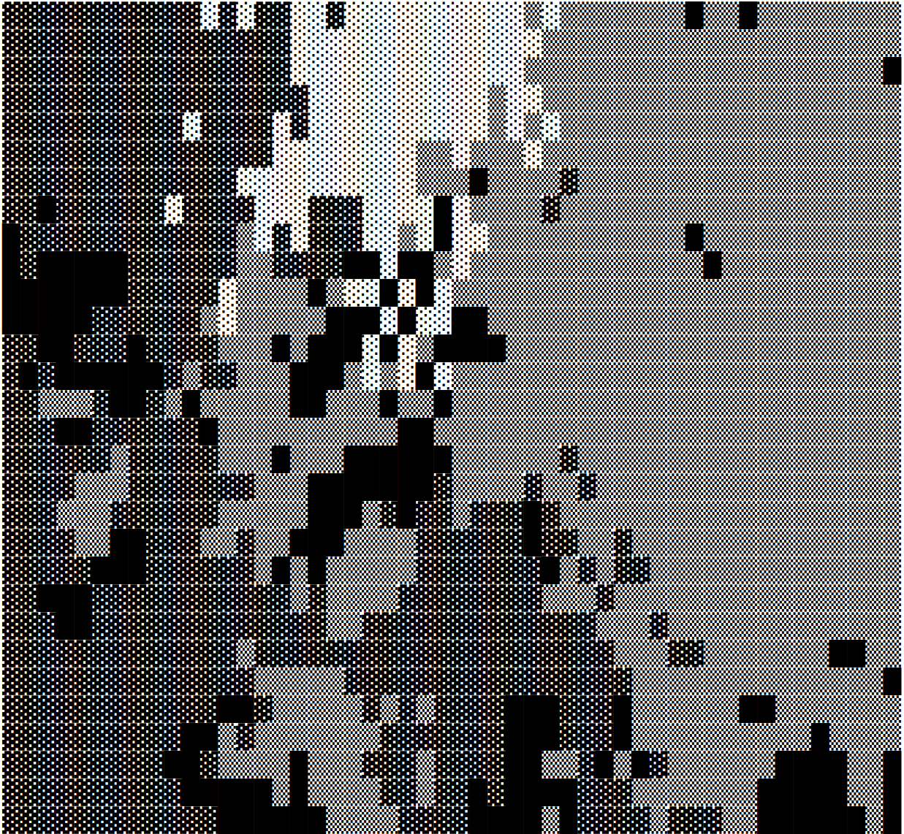
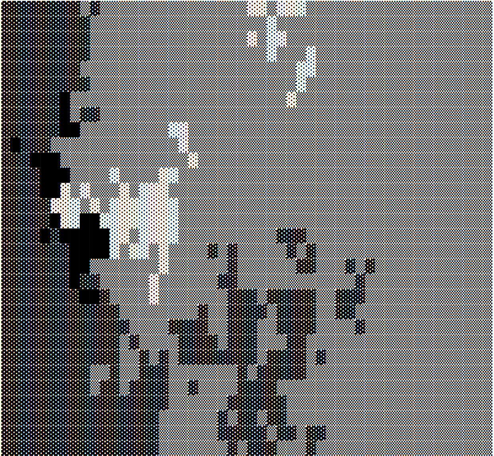

A little over a month ago, the tidyverse blog announced that the 0.1 version of webR had been released, opening up the possibility of running R code client side within a browser. To quote from the announcement,
By compiling R to WebAssembly a user can visit a website and run R code directly within the web browser, without R installed on their device or a supporting computational R server. All that is required is a normal web server, including the type of cloud hosting service provided by Github Pages or Netlify.
This is, to put it mildly, extremely cool, and unsurprisingly there was quite a bit of enthusiasm for it on Mastodon.1 And so, now that I find myself with an unfortunate amount of free time on my hands, I decided to play around with it – just for fun – to see if I could get a better sense of how it works.
I haven’t dived very deep into webR yet, but I managed to get far enough to build a simple cellular automaton simulation using webR, and host it with Netlify at webr-automata.djnavarro.net.2 If you visit the site, you’ll first see some text asking you to wait for webR to load, and then a text-based grid with cells coloured in different shades of grey. Over time, the cells change colours and the boundaries between different colour blocks tend to become more coherent, as shown in the sequence of images (time runs from left to right) below:


If you let the simulation run long enough, eventually one colour comes to dominate the entire grid.3 It’s not the most exciting or artistic code I’ve ever written, but I have to confess I find it oddly soothing to watch.
Some background
Before diving into the code, it’s probably a good idea to say a little bit about how webR works. If you’re at all like Danielle-from-a-month-ago, you might be approaching this with a very simple mental model. Normally when we run R code, we’re using a copy of the R interpreter that has been installed on a local machine. The R code chunks on this quarto blog are all executed locally, for example: I have a copy of R installed on my laptop, the code is run using this copy of R, and the only things that get pushed up to my website are the HTML documents that quarto creates. None of the R code is executed within the browser. Even when we shift to something fancier like a Shiny app or Posit Cloud, the browser does not execute R code: somewhere there is a server that has R installed, and the computational work is done using that R installation, outside of the browser. The reason for this is awfully simple: browsers don’t ship with a copy of R, so they can’t execute R code! 😢
With that as your mental model, the concept behind webR – in which the browser really does execute R code – feels like dark magic. How can this be?
The answer to this question is, to reduce it to two words, web assembly. I’d been vaguely aware of web assembly for a little while, but until webR came into being I hadn’t paid much attention to it. The underlying idea, as described on the website, is as follows:
WebAssembly (abbreviated Wasm) is a binary instruction format for a stack-based virtual machine. Wasm is designed as a portable compilation target for programming languages, enabling deployment on the web for client and server applications.
Sounds fancy, right? Again, if you’re like me, there’s a part of your brain that just shuts down when reading this description. Okay sure, I’ve written code in compiled languages like C, C++, and Rust, so I have a pretty decent sense of what “binary instruction format” refers to… I mean, if you’re compiling your source code to an executable binary file that contains the instructions that a computer will execute then – obviously – the machine needs to understand those binary instructions. Duh. But wtf is a “stack-based virtual machine” and what does it mean to have a “portable compilation target”, and why does that mean I can now write R code for the web?????
Hm.
Okay, I’ll be honest: I don’t really understand the low-level details. But also, I don’t care about them either. What I do care about are the following facts:
Web assembly is a binary format you can compile source code to.
There are existing compilers like emscripten that create web assembly binaries from C and C++
Modern browsers ship with web assembly in the same way they ship with javascript: the browser can execute a wasm binary
The R interpreter is written in C
When you put these things together, you can see how webR might (and indeed does) work. It’s entirely possible to take the source code for the R interpreter and use emscripten to compile R itself to web assembly. If there were a wasm version of R, your web page could import it in much the same way that it imports a javascript script, and then that “wasm-R” binary could execute an R script.
What a fabulous idea. Someone should do that. Oh wait… George Stagg already did. That’s precisely what webR does. 🤦♀️
Of course, if you spend a bit of time thinking about the practicalities of making this work, you start to realise there are some tricky things to manage. How exactly would wasm-R read an R script? How would it interact with the DOM?4 When you’re writing code for the web using javascript, this isn’t an issue: you just write code like this…
…or whatever. Javascript has a native way of interacting with HTML. Web assembly doesn’t have that, and so the web assembly version of R inherits this limitation. As a consequence, we have to use javascript as an intermediary. Therein lies a lot of the magic. If you dig into the documentation for webR, what you notice is that the bulk of it is devoted to describing APIs that let webR and javascript interact with each other. It has to be that way if we want a web assembly version of R to have the ability to modify the state of the web page!
Or, to put it another way, if you’re an R developer who wants to write webR code, you’re also going to have to write some javascript that controls the interactions between your (webR interpreted) R code and the HTML document. And, because code execution on the web has a variety of security risks that browsers try hard to mitigate, you might guess that you’re going to have a lot of finicky details to manage in order to get your code to run without the browser screaming at you.
So in practice, a lot of what you need to learn if you want to jump from “localR” to webR is going to relate to those issues. It makes sense when you look at it in these terms, and feels kind of obvious in hindsight, but it wasn’t until I started trying to write webR code that I realised that this is how it works.
Making a plan
Okay, that’s enough background. Let’s start building something that tries to make these ideas a bit more concrete. To do that we’ll need to write a simple R application of some kind. If you know anything about me at all, you’d guess (correctly) that the applications I like to make for fun tend to be artistic in nature. I can’t help it… I like creating pretty visuals with R. Unfortunately, this is one of the trickier things to do with webR in its current state of development. It is possible, of course: if you take a look at the webR REPL you’ll see that the webpage has an HTML canvas to which R graphics can be drawn. That’s super cool, but I’m certainly not going to start by trying to implement something like that myself. Instead, I’ll do something simpler: I’ll write an R function that takes text input and produces text output. Then, I’ll do something sneaky and display that text in a way that looks like a picture.
Basically, it’s ASCII art. I’m going to make ASCII art, but because its the 21st century I’ll do it with UTF-8 characters rather than literally using ASCII.
The R code
I’ll start by showing the R code. The site contains a script called automaton.R and it defines a function called automaton() that takes a single character string as input, and returns a modified string as output. The string is used as the data to define a two dimensional matrix, with one character per cell, and on each iteration of the simulation, one character is updated by copying the value of one of its neighbours in the grid. Here’s the code:
automaton.R
automaton <-function(str =NULL,linebreak ="<br>",n_rows =30,n_cols =50,iterations =100,symbols =c("░", "▒", "▓", "█")) {# create random string if none is givenif (is.null(str)) { str <-sample(symbols, n_rows * n_cols, TRUE) str <-paste(str, collapse ="") }# make matrix from (possibly break-delimited) string str <-gsub(pattern = linebreak,replacement ="",x = str,fixed =TRUE ) dat <-matrix(data =strsplit(str, "")[[1]],nrow = n_rows,ncol = n_cols,byrow =TRUE )# run simple automatonfor (i in1:iterations) {# choose an interior cell in the grid r <-sample(2:(n_rows -1), 1) c <-sample(2:(n_cols -1), 1)# choose one of its neighbours (sort of) h <-sample(-1:1, 1) v <-sample(-1:1, 1)# copy the original cell value to the neighbour cell dat[r + v, c + h] <- dat[r, c] }# convert matrix to string and return str <-""for (i in1:n_rows) { row <-paste(dat[i, ], collapse ="") str <-paste(str, row, sep = linebreak) } str <-paste(str, linebreak, sep ="") str}
Now, for the purposes of this post I’m assuming you’re already pretty familiar with writing R code, and I’ve deliberately written this function in a way that doesn’t require a lot of explanation for an R user. It’s all written in base R, I’m not using any fancy packages, and I haven’t made any efforts to make it run quickly. I don’t want any complexity on the R side: all I want for this post is to have some R code that works.
The output here doesn’t look as pretty as the pictures shown at the start of this post, but that’s mostly because the CSS styling for this blog creates white space between lines. On the webr-automata.djnavarro.net site there’s nothing like that so all that white space disappears and the output looks like a shaded grid.
Anyway, the key thing here is that on the website I have this code saved to an R script called automaton.R, and it is this script that webR will need to work with.
The HTML
The next step in the process is to create a webpage. Or, more precisely, to write an HTML document. I’m going to keep this part extremely simple. The site has an index.html file that only does two things: it creates an div called “grid” that we can modify using javascript, and imports a script called webr-app.js that takes care of any such modifications:
index.html
<!DOCTYPE html><htmllang="en"><head><metacharset="utf-8"/><title>Text Textures</title></head><body><divid="grid">webR is starting, please wait...</div><scriptsrc="./webr-app.js"></script></body></html>
This HTML document provides the skeleton for the webpage, and the webr-app.js script will act as the intermediary between my R code and the HTML document.
The Javascript
Now comes the fun part.5 I need to write some javascript that:
Imports webR itself so I can execute R code
Reads my R script from the automaton.R file
Uses webR to call the automaton() R function defined in the file
Updates the state of the HTML document using the output of automaton()
How do I do this? As much as I love a good murder mystery, I don’t think the mystery novel format is ideal when writing technical documents, so let’s start by revealing the ending. Here’s the complete source code for webr-app.js:
webr-app.js
// import the webr module and then run the codeimport('https://webr.r-wasm.org/latest/webr.mjs').then(async ({WebR}) => {// the HTML element showing the gridlet grid =document.getElementById("grid");// wait for the webR session to startconst webr =newWebR();await webr.init();// read the script as a string, and evaluate it in Rlet automaton =awaitfetch('automaton.R');await webr.evalR(await automaton.text());// initialise the state of the gridlet str =await webr.evalR('automaton()') grid.innerHTML= (await str.toJs()).values;// function to update the state of the gridasyncfunctiongrid_update() {await webr.objs.globalEnv.bind('str', grid.innerHTML)let str =await webr.evalR('automaton(str)') grid.innerHTML= (await str.toJs()).values; }// repeatedly call the update functionwhile (true) {awaitgrid_update(); }});
If you’re fluent in javascript you can probably look at this and immediately work out what it does, but not every R user has had the (mis)fortune to work extensively in javascript, so I’ll be kind and try to unpack it a bit! At a high level, this code has the following structure:
import('https://webr.r-wasm.org/latest/webr.mjs').then(async ({WebR}) => {// use the WebR object to do a bunch of stuff});
For an R user some of this is a little opaque if you don’t have the javascript concept of a thenable, but it’s not too hard to see the intent. The browser is first asked to download webR from the specified URL, and then once this operation has finished, it proceeds to execute the code that follows. More precisely, the .then() method is called once the promise returned by the previous method resolves, and it executes whatever function it is passed. In this case the code uses the => notation to define an anonymous function that takes the WebR object – the interface to webR – as an input argument. So now let’s take a look at what happens when this function is called.
The code starts simple. The first thing it does is define a javascript variable grid that refers to the HTML element that we want our R code to manipulate:
let grid =document.getElementById("grid");
Next, we start the R session:
const webr =newWebR();await webr.init();
The const and new keywords aren’t interesting: new just means we’re creating a new instance from WebR, and const means it’s a constant. We aren’t going to modify the webr object itself. What we are going to do, however, is use it to initialise a new R session. That’s what webr.init() does. The await keyword is used to tell javascript to wait for this code to finish executing before starting the next instruction. That’s important in javascript because – unlike R – a lot of javascript code runs asynchronously. Javascript is perfectly happy to start a function running (returning a promise object) and moving onto the next line of code without waiting for that function to finish. When calling asynchronous functions, javascript doesn’t wait for the “promise” to resolve unless you explicitly tell it to using the await keyword. In this case, we definitely don’t want to try executing R code until we actually have an R session, so I’ve used await to tell javascript to wait until we have one.
The next step in the process is to have javascript read the source code from the automaton.R file as a string, and then pass that to webr to evaluate. The code below does this:
let automaton =awaitfetch('automaton.R');await webr.evalR(await automaton.text());
Here, the javascript fetch() function takes care of the file read operation, and the webr.evalR() function passes the code to R for evaluation. Once this code finishes, the R session will have the automaton() function defined in the global workspace.
Now that the R session has access to the automaton() function, we can again use webr.evalR() to call this function. If you look back to the way I defined the automaton() function earlier in the post, you’ll notice that if we call it without passing it a string as input, it will create a random string to use as the starting point for the cellular automaton. So that’s what we do in the first line of this snippet:
let str =await webr.evalR('automaton()')grid.innerHTML= (await str.toJs()).values;
The second line in this javascript takes the string that the automaton() R function outputs, converts it to a javascript string (that’s what the str.toJs() bit does), and then modifies the HTML document (specifically the grid element defined in the first line of javascript) so that the text displayed on the page corresponds to the string that the R function produced.
The rest of the javascript code is essentially the same trick repeated over and over ad infinitum:
// function to update the state of the gridasyncfunctiongrid_update() {await webr.objs.globalEnv.bind('str', grid.innerHTML)let str =await webr.evalR('automaton(str)') grid.innerHTML= (await str.toJs()).values;}// repeatedly call the update functionwhile (true) {awaitgrid_update();}
What I’ve done here is define a javascript function grid_update() that does three things:
It reads the string currently displayed on the website (i.e. grid.innerHTML) and uses webr.objs.globalEnv.bind() to create a variable called str in the R workspace that contains the same text.
Next, it uses webr.evalR() to call the R function automaton(), passing the R string str as input, and storing the results as a variable (also called str because I am lazy) on the javascript side.
Finally, it converts the str object to a native javascript string and uses it to update the text displayed on the website (i.e., it modifies grid.innerHTML).
Having defined this function, I now do something extraordinarily lazy: I create an infinite loop that calls grid_update() over and over forever, thereby creating the animation that you see on the website.
And with that we are done.
Well, sort of. There are going to be a few details to sort out when we go to deploy this to the web, but that’s the core of our very simple app.
The finicky bits
Now for the annoying fiddly bits. If you take a look at the actual source code on github.com/djnavarro/webr-automata you’ll notice that there are a few other files I’ve included. Two of them are completely irrelevant: README.md isn’t part of the web application, and neither is .gitignore. The serve.R function isn’t really part of the app either, it’s just an R script I used to serve the site locally while I was writing the code.
The other three files – netlify.toml, webr-serviceworker.js, and webr-worker.js – are relevant. Let’s start by taking a look at the contents of the two javascript files:
Okay, there’s actually not much there. That’s because I’ve copied this code directly from the webR documentation, and there’s no reason why you shouldn’t do likewise! You do need these files in order for the application to work, however, and while I don’t want to go into any detail about what’s going on under the hood here6 it might be helpful to quickly read up on what web workers and service workers are used for. Basically you need these things to allow webR to do its thing in the background.
As before, I’m not planning to go into detail about what this is all about, but if you’re not familiar with cross-origin resource sharing (CORS) it’s probably helpful to take a read through the Mozilla documentation on CORS. The short version is that these headers are needed to prevent the browser from blocking webR in your application.
The wrap up
Nail in my hand From my creator You gave me life Now show me how to live –Audioslave
Despite being in the very early stages of development I kind of love webR already. One of my big frustrations as someone who writes a lot of R code for data analysis and generative art, and someone who writes a lot of HTML/CSS/javascript code for the web, is that it’s really hard to bring these two worlds together. Literate programming tools like R markdown, jupyter, and quarto are all useful to some extent, because they make it easier to write about R code on the web in a natural way7, but they don’t allow you to execute the R code in an interactive way. You can solve this problem by writing Shiny apps, but it’s also a limited solution, because a Shiny app won’t work without a server running a local copy of R, and someone has to pay to keep that server running. Speaking as an unemployed woman who just shut down her kubernetes apps because I’m sure as hell not going to pay for them out of my own pocket, this is not ideal. The thing I’ve always wanted is the ability to create websites that execute R code client-side, in exactly the same way that my sites can execute javascript code within the users browser.
It’s early days, of course, but webR offers the tantalising prospect of making this dream a reality. At long last my R code can live in the browser, and I can really show people what you can do with R.
I’m terribly excited.
Footnotes
I imagine it also generated excitement on Twitter, but quite frankly there is no chance of me returning to Twitter while it remains a privately held company whose owner uses the site to flirt with anti-trans conspiracy theories at the same time that governments around the world are openly passing draconian legislation targeting us. In all honesty, I’ve been a bit… um… disheartened… to learn that this isn’t a deal-breaker for very many people. But whatever. I suppose I can’t really know why other people make the choices they do.↩︎
Yes there are proofs that this occurs with probability 1 in the limit, but do you really need to see them? I mean, this is basically a simple random walk with absorbing states so of course it does. Sheesh.↩︎
This is “fun” in precisely the same way that it’s fun to spend time with an impact top. You’re going to love it, but tomorrow morning you’re going to have bruises.↩︎
Largely because I’m not exactly an expert on this bit myself.↩︎
If you doubt me on the utility of these things, let me mention that I wrote the entirety of Learning Statistics with R in pure LaTeX… it was a fucking nightmare.↩︎
@online{navarro2023,
author = {Navarro, Danielle},
title = {How to Run {R} Code in the Browser with {webR}},
date = {2023-04-09},
url = {https://blog.djnavarro.net/posts/2023-04-09_webr},
langid = {en}
}
![]()